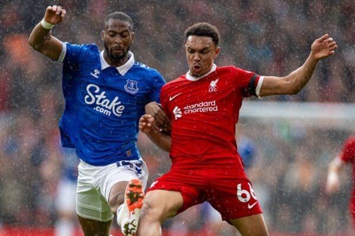
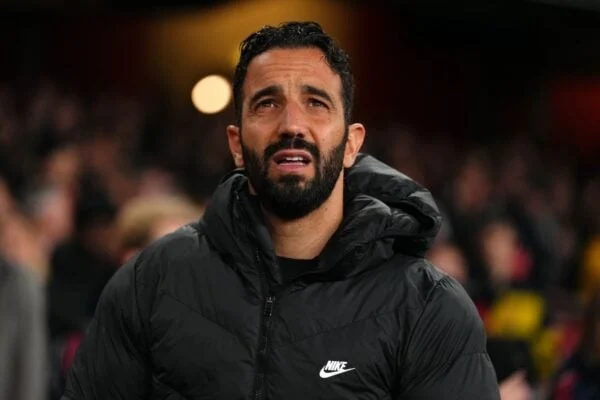

Demo of a Sport website
Everton fc vs Liverpool fc
Team news/ injury update ahead of clash

- Everton striker Beto is an injury doubt for the Merseyside derby after a sickening clash of heads with Nottingham Forest‘s Morgan Gibbs-White – we wish him the best because that was a horrible one!
- An “ashamed” Man United fan has warned others after receiving a ban for vile Hillsborough taunts – when will these people learn?
- Jordan Henderson was spotted back at Liverpool’s AXA Training Centre – there’s a key reason why and it’s not because we’re re-signing him!
- An ‘injury’ to Virgil van Dijk has been cleared up after a nasty collision at Atalanta – it’s a good job we didn’t get a close up of the issue, it sounds grim!
Transfer News

Sporting CP manager Amorim has stood out as the favourite to succeed Jurgen Klopp this summer, following Xabi Alonso’s decision to stay at Bayer Leverkusen. There has now been a significant twist, however, with the reliable David Ornstein, from the Athletic, claiming that West Ham have held talks and that a move to Liverpool is now deemed “unlikely.” At this point, who on earth is the Reds’ next manager going to be? The odds tell us Feyenoord’s Arne Slot is now the favourite! Better start digging into him.